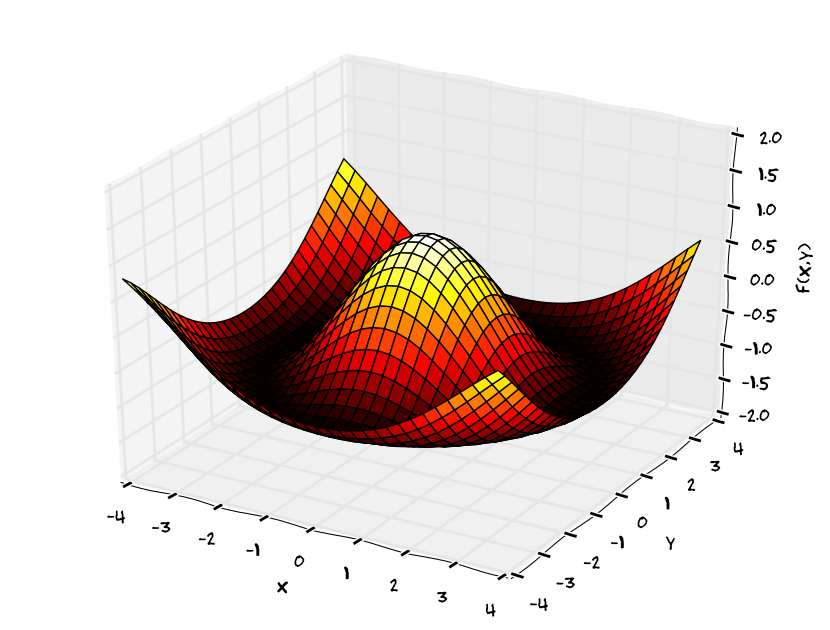

Naučíme se sledovat rychlost, s jakou se mění veličina, která je objektem našeho zájmu.
U veličin závisejících na několika parametrech budeme schopni sledovat reakci těchto veličin na změny parametrů. Například u teploty můžeme v daném místě sledovat změnu teploty v čase, nebo můžeme v daném čase sledovat změnu teploty s polohou.
Aparát využijeme k tomu, že z fyzikálních zákonů sestavíme rovnici vedení tepla. Rovnice vedení tepla je jednou z nejdůležitějších rovnic matematické fyziky. Jedná se o matematický model umožňující jednak modelování přenosu tepla a jednak kontrolu toho, že fyzikální zákony vedoucí k formulaci této rovnice správně vystihují realitu.
Prerekvizity.
Navážeme na znalosti z diferenciálního počtu funkcí jedné proměnných. Zejména je nutné si připomenout definici, využití a výpočet derivace.
Zopakujte si fyzikální (praktický) význam derivace a pro osahání si konkrétních příkladů také základní metody výpočtu.
Základní informace o funkci jedné proměnné a její derivaci si můžete osvěžit v materiálech k předmětu Matematika. Následuje neformální připomenutí pojmu derivace.
Zobrazení \(f: \mathbb{R}\to \mathbb{R}\) se nazývá funkce jedné proměnné.
V kartézské soustavě souřadnic pracujeme často s grafem funkce, což je množina uspořádaných dvojic bodů \([x,f(x)]\). Tyto body zpravidla vyplní křivku v rovině. (Nakreslit online.)
Jedním ze zásadních úkolů je schopnost měřit růst nebo pokles veličiny a jeho rychlost. Abychom nemuseli rozlišovat nárůst a pokles, pracujeme s jednotným přístupem, kdy pokles uvažujeme jako záporný nárůst a častěji obojí sjednocujeme pod pojem změna veličiny.
U veličiny závislé na čase změnu veličiny na časovém intervalu určujeme jako rozdíl hodnoty veličiny na konci a na začátku časového intervalu, tj. \[f(t+h)-f(t)\] je změna veličiny mezi okamžiky \(t\) a \(t+h\). Pro porovnání rychlostí změny tuto změnu přepočítáváme na jednotku času a definujeme průměrnou rychlost změny vztahem \[\frac{f(t+h)-f(t)}{h}.\] Kladná rychlost znamená nárůst v čase, záporná pokles. Pro nalezení okamžité rychlosti změny bychom potřebovali dosadit \(h=0\), aby byla rychlost počítána na intervalu nulové délky. Toto udělat nemůžeme, protože bychom dostali nedefinovaný výraz, můžeme to však obejít pomocí limity a najít okamžitou rychlost jako limitu \[\lim_{h\to 0}\frac{f(t+h)-f(t)}{h}.\] Tato limita se nazývá derivace a udává, jak rychle se mění funkce \(f\) v čase v okamžiku \(t\). Protože kladná změna odpovídá nárůstu, interpretujeme derivaci často i jako rychlost změny funkce i jako rychlost růstu funkce. Protože rychlost je změna za jenodtku času, můžeme derivaci ekvivalentně interpretovat jako nárůst za jednotku času nebo změnu za jednotku času.
V některých přírodních zákonech potřebujeme pracovat s rychlostí poklesu funkce nebo s poklesem za jednotku času. Tento pokles vyjařuje záporně vzatá derivace, tj. derivace vynásobená faktorem \((-1)\).
U veličiny závislé na poloze postupujeme analogicky, ale rychlostí změny rozumíme změnu na jednotce délky, tj. pro interval délky \(h\) a polohu vyjádřenou souřadnicí \(x\) je okamžitá rychlost růstu dána vztahem \[\lim_{h\to 0}\frac{f(x+h)-f(x)}h.\]
Výše uvedený koncept je možné použít i pro libovolnou jinou nezávislou proměnnou, než je čas nebo poloha. Je-li \(f\) funkce proměnné \(x\), definujeme derivaci \(f'(x)\) funkce \(f\) v bodě \(x\) vztahem \[f'(x):=\lim_{h\to 0}\frac{f(x+h)-f(x)}h.\]
Podle kontextu a oborových zvyklostí zapisujeme derivaci pomocí čárky (někdy tečky) nebo jako podíl diferenciálů. \[y', \quad \frac{\mathrm dy}{\mathrm dx}, \quad \frac{\mathrm d}{\mathrm dx}y\]
Derivace derivace je rychlost s jakou se mění rychlost změny a nazývá se druhá derivace. Je označována nejčastěji některým z následujících způsobů. \[y'',\quad \frac{\mathrm d^2y}{\mathrm dx^2}, \quad\frac{\mathrm d^2}{\mathrm dx^2}y.\]
Poznámka (Newtonův zákon tepelné výměny).
Sobi karibu v polárních krajích nepotřebují sněhule a přesto jim není zima. Jak to dělají? Minimalizují teplotní rozdíl mezi svým krevním oběhem a povrchem, po němž chodí. Mají v nohách zabudovaný protiproudý tepelný výměník. Tím minimalizují teplotní ztráty. Podle https://twitter.com/fuseknowledge/status/1215796937657479168
Je-li \(T(t)\) teplota tělesa v čase \(t\), je \(\frac{\mathrm dT}{\mathrm dt}\) změna této teploty za jednotku času, tj. rychlost s jakou roste teplota. Například pro čas v minutách a teplotu ve stupních Celsia hodnota derivace v šesté minutě může být \[\frac{\mathrm
dT}{\mathrm dt}(6)=2 ^\circ \mathrm {C}/\mathrm{min}. \] To znamená, že v čase \(6\) minut roste teplota okamžitou rychlostí \(2\) stupně Celsia za minutu. Pokud tento růst vydrží celou minutu, bude v čase \(7\) minut teplota o dva stupně Celsia vyšší. Pokud tato rychlost růstu vydrží deset minut, jsme schopni podobně určit změnu teploty i za delší časový úsek.
V reálných dějích však konstantní rychlosti vídáme zřídka. Například u tepelné výměny se dynamika procesu zastavuje tím, jak se teploty postupně vyrovnávají. Rychlost, s jakou roste teplota chladného tělesa při tepelné výměně s teplejším tělesem není konstantní, ale mění se. Nejčastějším modelem reálné situace je, že tato rychlost je úměrná rozdílu teplot těles zapojených do tepelné výměny. Roli teplejšího tělesa hraje většinou okolí. Pokud je tedy teplota okolí konstantní a rovna \(T_0\), je kvantitativním modelem procesu tepelné výměny rovnice \[\frac{\mathrm dT}{\mathrm dt}= k(T_0-T).\] To platí pro ohřev (teplota okolí je vyšší a teplota tělesa roste). Analogicky můžeme naformulovat model \[\frac{\mathrm dT}{\mathrm dt}= -k(T-T_0)\] pro ochlazování (teplota okolí je nižší, těleso se ochlazuje a má zápornou derivaci podle času).
Tento model se naučíme časem vyřešit, to však není to nejdůlěžitější. Obrovským úspěchem je již to, že s derivacemi dostala věda nástroj umožňující kvantitativně pracovat s okamžitou rychlostí změny libovolné veličiny. Derivace umožňují vymanit se z omezení používaných ve středoškolské fyzice, která se týká zpravidla velmi specifických podmínek, a věnovat se popisu reálného světa.
Protože tvar rovnic s derivacemi má naprostá většina fyzikálních zákonů a pomocí rovnic s derivacemi je modelována naprostá většina fyzikálních procesů, existují propracované nástroje pro řešení těchto rovnic na počítači. Z pedagogických důvodů si však může kdokoliv daný matematický model naskriptovat tak, že předpokládá časové skoky, v jejichž rámci je rychlost neměnná a změny veličin jsou počítat běžnými operacemi násobení a sčítání. Například Sage je založen na široce rozšířeném jazyce Python, případně Octave jako opensource alternativa programu Matlab.
Změna \(\Delta x\) v proměnné \(x\) vyvolá změnu \(\Delta y\approx f'(x) \Delta x\). Proto je možné používat lineární aproximaci funkce \[f(x)\approx f(x_0)+f'(x_0)(x-x_0). \] Například naprostá většina materiálových vztahů je takovou aproximací pro \(x_0=0\) (relativně malé podněty) a \(f(x_0)=0\) (bez podnětu není odezva). Lineární aproximace má poté tvar \[f(x)\approx f'(0)x=kx.\] Proto jsou zákony jako Fourierův, Fickův nebo Darcyho formulovány ve tvaru přímé úměrnosti. S těmito zákony jste se pravděpodobně seznámili v naukách o materiálu a blíže se jim budeme věnovat později. Podobně je možno chápat Newtonův zákon tepelné výměny z předchozí poznámky jako lineární aproximaci případného obecného vztahu. Srovnejte obecný vztah \[\frac{\mathrm dT}{\mathrm dt}= \Phi(T_0-T), \quad \Phi(0)=0\] a formálně sice podobný vztah \[\frac{\mathrm dT}{\mathrm dt}= k\times(T_0-T), \quad k=\Phi'(0),\] který ale místo obecné a složitě identifikovatelné funkce \(\Phi\) obsahuje jenom násobení vcelku jednoduše měřitelnou konstantou \(k\).
Poznámka (logistický růst populace).
Je-li \(x(t)\) velikost populace živočichů, je \(\frac{\mathrm dx}{\mathrm dt}\) změna této velikosti za jednotku času. Častým modelem reálné situace je modelování pomocí logistické rovnice \[\frac{\mathrm dx}{\mathrm dt}=r x \left(1-\frac xK\right).\] V této rovnice vystupuje celková nosná kapacita prostředí \(K\) a rovnice vyjadřuje, že rychlost růstu je úměrná velikosti populace a volné kapacitě prostředí. Volnou kapacitu prostředí počítáme jako doplněk obsazené části prostředí do sta procent. Obsazenou část prostředí počítáme jako podíl velikosti populace a nosné kapacity prostředí.
Poznámka (pohybová rovnice).
Při pádu kočky z okna je kritická výška sedmého patra. Čím je toto patro speciální?
Při pohybu po přímce je \(x=f(t)\) poloha v čase \(t\), rychlost je \(\frac{\mathrm dx}{\mathrm dt}\) a zrychlení je \(\frac{\mathrm d^2x}{\mathrm dt^2}\). Podle Newtonova pohybového zákona platí \[m\frac{\mathrm d^2x}{\mathrm dt^2} =F,\] kde \(F\) je výsledná síla působící na objekt. Objevení této zákonitosti byl obrovský skok v poznání. Newton zjistil, že síla souvisí se zrychlením (tedy s časovou změnou rychlosti, v dnešní terminologii s derivací rychlosti podle času nebo /ekvivalentně/ s druhou derivací polohy podle času). Dříve lidé měli za to, že síla souvisí s rychlostí pohybu (v dnešní terminologii tedy s derivací polohy podle času). To ale byla špatná představa, takto příroda nefunguje. Newton ukázal, jaká je správná cesta a dokázal své myšlenky tím, že pohybové zákony planet, které byly známé z vyhodnocení astronomických pozorování (Mikuláš Kopernik), odvodil ryze matematickou cestou. Pohybová rovnice funguje stejně pro planety jako pro objekty na Zemi a umí vysvětlit i zřejmé i méně zřejmé efekty. Například v práci Problém ohnuté kolejnice a kouzlo numerické matematiky. je rovnice použita k vysvětlení toho, proč je při pádu kočky kritická výška sedmého patra. (Podle záznamů newyorských lékařů je při pádu kočky z výšky sedmého patra největší pravděpodobnost úmrtí. Vyšší nebo nižší patro kočka “zvládá” lépe a případná zraněnní nejsou tak závažná. Více v uvedeném odkaze.)
Funkce dvou proměnných, graf
3d graf funkce dvou proměnných
V popisu přírodních dějů si zřídka vystačíme s funkcemi jedné proměnné. Děje probíhají v čase (jedna časová proměnná) a v nějakém místě (jedna až tři prostorové proměnné). Už pro základní fyzikální úlohy tedy musíme umět pracovat s funkcemi více proměnných.
Zobrazení \(f: \mathbb{R}^2\to \mathbb{R}\) se nazývá funkce dvou proměnných.
Grafem funkce \(f\) je množina uspořádaných trojic \([x,y,z]\), které splňují \(z=f(x,y)\) . Graf kreslíme zpravidla jako body v 3D prostoru.
Kvalita života ve městech souvisí s hospodařením s teplem a tzv. tepelnými ostrovy. Zdroj: pixabay.com
Příkladem skalární funkce dvou prostorových proměnných je teplota v určitém okamžiku na dvourozměrném povrchu. Aparát funkcí dvou proměnných se tedy jistě uplatní při studiu tepelných ostrovů souvisejících s urbanizací a kvalitou života ve městech.
Příkladem skalární funkce dvou proměnných, kdy každá z proměnných má jiný charakter, je teplota ve stěně budovy. Tato teplota se mění s časem (studená stěna, na kterou začalo svítit slunce, se ohřívá) a s polohou (vnější a vnitřní okraj stěny mají teplotu přibližně podle teploty venku a teploty uvnitř budovy, uvnitř stěny se teplota spojitě mění).
Parciální derivace
Pokud sledujeme například ve stěně měnící se teplotní profil, zajímá nás, jak se teplota v jednotlivých místech stěny mění v čase a jak se teplota mění v řezu stěnou. Zdá se býti rozumné oddělit obě změny. Buď v daném bodě fixovat polohu a sledovat časový vývoj v tomto bodě, nebo v daném čase udělat něco jako teplotní snímek a srovnávat teplotu ve vybraném bodě s okolními teplotami ve stejném čase. To vede k následujícímu přístupu, kdy u funkce více proměnných sledujeme reakci na změnu jedné jediné veličiny.
Definice (parciální derivace).
Buď \(f(x,y)\colon \mathbb R^2\to\mathbb R\) funkce dvou proměnných \(x\) a \(y\). Výraz \[\frac{\partial f}{\partial x}:=\lim_{h\to 0}\frac{f(x+h,y)-f(x,y)}{h}\] se nazývá parciální derivace funkce \(f\) podle \(x\). Výraz \[\frac{\partial f}{\partial y}:=\lim_{h\to 0}\frac{f(x,y+h)-f(x,y)}{h}\] se nazývá parciální derivace funkce \(f\) podle \(y\).
Podobně můžeme definovat parciální derivaci pro funkce libovolného konečného počtu proměnných. V těchto parciálních derivacích vlastně sledujeme, jak reaguje veličina \(f\) na změny jenom v jedné proměnné. Ostatní proměnné, podle kterých se nederivuje, mají vlastně roli parametru a nijak se nemění.
Poznámka (stavební kameny z definice derivace).
Výraz \[f(x+h,y)-f(x,y)\] z čitatele je změna veličiny \(f\) na intervalu \([x,x+h]\) při konstantní veličině \(y\). Tento čitatel často označujeme též \(\Delta f\).
Podíl \[\frac{f(x+h,y)-f(x,y)}h\] je změna veličiny \(f\) na intervalu \([x,x+h]\) při konstantní veličině \(y\) přepočítaná na jednotku veličiny \(x\). Je to tedy průměrná rychlost změny funkce \(f\) vzhledem k \(x\) na intervalu \([x,x+h]\). Často označujeme též \(\frac{\Delta f}{\Delta x}\).
Limita v definici derivace stahuje délku intervalu pro výpočet průměrné rychlosti k nule. Tím se z průměrné rychlosti stane okamžitá rychlost. Parciální derivace je tedy okamžitá rychlost, s jakou se mění funkce \(f\) při změnách jedné proměnné.
Poznámka (jednotka parciální derivace).
Jednotka derivace \(\frac{\partial f}{\partial x}\) je stejná, jako jednotka podílu \(\frac {f}x\). Jednotka derivace \(\frac{\partial f}{\partial y}\) je stejná, jako jednotka podílu \(\frac {f}y\).
Derivace \(\frac{\partial f}{\partial x}\) udává, jak se mění veličina \(f\) při změnách veličiny \(x\) a za předpokladu konstantní veličiny \(y\). Interpretace derivace v nematematických disciplínách je proto okamžitá rychlost s jakou veličina \(f\) reaguje na změny veličiny \(x\).
Poznámka (derivace teploty podle času a polohy).
Pokud sledujeme vývoj a rozložení teploty na dvourozměrné tepelně vodivé desce, je teplota (udávaná například ve stupních Celsia) funkcí tří proměnných: jedna proměnná je čas \(t\) a dvě proměnné \(x\) a \(y\) jsou souřadnice v rovině. Tedy \(T=T(t,x,y).\) Parciální derivace \(\frac{\partial T}{\partial t}\) udává je rychle (například ve stupních Celsia za hodinu) roste v daném místě teplota. V různých částech desky může být tato veličina jiná a vždy se vztahuje k danému bodu. Může se měnit i v čase, například deska v prostředí s konstantní teplotou postupně dospěje do stavu se stacionárním rozložením teploty, kdy se teplota v žádném místě ani neroste ani neklesá a parciální derivace podle času je nulová. Derivace \(\frac{\partial T}{\partial x}\) udává jak prudce (například ve stupních Celsia na centimetr) roste teplota ve směru osy \(x\).
Interpretace parciální derivace, vedení tepla v 1D
Studujme vedení tepla v jednorozměrné tyči. Teplota \(T\) je funkcí dvou proměnných: polohy \(x\) a času \(t\). Tedy \(T=T(t,x).\) Parciální derivace \(\frac{\partial T}{\partial t}\) udává, jak rychle (například ve stupních Celsia za hodinu) roste v daném místě teplota. V různých částech desky může být tato veličina jiná a vždy se vztahuje k danému bodu. Přirozeně se mění i v čase. Například v prostředí s konstantní teplotou postupně systém dospěje do stavu se stacionárním rozložením teploty, kdy se teplota v žádném místě ani neroste ani neklesá a parciální derivace podle času je nulová. Derivace \(\frac{\partial T}{\partial x}\) udává jak prudce roste teplota ve směru osy \(x\). Tato derivace může být vyjádřena například ve stupních Celsia na centimetr.
Je-li parciální derivace \(\frac{\partial T}{\partial t}\) rovna \(2^{\circ}\mathrm{C}/\mathrm{min}\), znamená to, že v daném místě roste teplota v čase rychlostí dva stupně Celsia za minutu.
Pokud je parciální derivace teploty podle času záporná a rovna například hodnotě \(-2^{\circ}\mathrm{C}/\mathrm{min}\), znamená to, že teplota v tomto místě klesá rychlostí dva stupně Celsia za minutu.
Je-li parciální derivace \(\frac{\partial T}{\partial x}\) rovna \(2^{\circ}\mathrm{C}/\mathrm{cm}\), znamená to, že v daném místě roste teplota ve směru osy \(x\) takovou rychlostí, že na centimetru délky tyče naroste o dva stupně Celsia.
Pokud je parciální derivace teploty podle polohy záporná a rovna například hodnotě \(-2^{\circ}\mathrm{C}/\mathrm{cm}\), znamená to, že ve směru osy \(x\) teplota klesá takovou rychlostí, že na centimetru délky tyče klesne o dva stupně Celsia.
Interpretace parciálních derivací, brzdná dráha
Brzdy v autě musí absorbovat kinetickou energii, která je lineární funkcí hmotnosti a kvadratickou funkcí rychlosti. Zdroj: pixabay.com
Příklad: Brzdná dráha \(L\) (v metrech) auta o hmotnosti \(m\) (v kilogramech) brzdícího z rychlosti \(v\) (v kilometrech za hodinu) je dána vzorcem \[L=k m v^2,\] kde \(k= 3.45 \times 10 ^{-6}\,(\mathrm{m}\,\mathrm{hod}^2)/(\mathrm{kg}\,\mathrm{km}^2)\). Pro \(m=1100\,\mathrm{kg}\) a \(v=100\,\mathrm{km}/\mathrm{hod}\) je brzdná dráha \(37.95\,\mathrm{m}\).
Parciální derivace podle \(m\) je \(\frac{\partial L}{\partial m}=kv^2\) a pro zadané hodnoty vychází \[\frac{\partial L}{\partial m}=0.0345\, \mathrm{m}/\mathrm{kg}.\] Každý kilogram hmotnosti nad \(1100\,\mathrm{kg}\) auta jedoucího rychlostí \(100\,\mathrm{km}/\mathrm{hod}\) prodlouží brzdnou dráhu o cca \(3.5\,\mathrm{cm}\).
Parciální derivace podle \(v\) je \(\frac{\partial L}{\partial v}=2kmv\) a pro zadané hodnoty vychází \[\frac{\partial L}{\partial v}=0.759\,\mathrm{m}/(\mathrm{km}/\mathrm{hod})=7.59\times 10^{-4}\,\mathrm{hod}.\] Každý kilometr za hodinu nad \(100\,\mathrm{km}/\mathrm{hod}\) u auta vážícího \(1100\,\mathrm{kg}\) prodlouží brzdnou dráhu o cca \(76\,\mathrm{cm}\).
Zjednodušený vzorec pro brzdnou dráhu auta s hmotností blízkou \(1100\,\mathrm{kg}\) a rychlostí blízkou \(100\,\mathrm{km}/\mathrm{hod}\) je \[L\approx 37.95+0.0345(m-1100)+0.759(v-100),\] kde hmotnost a rychlost se dosazují v kilogramech a kilometrech za hodinu a brzdná dráha vychází v metrech.
Energie potřebná pro překonání pevné vzdálenosti závisí na hmotnosti jedince a na rychlosti, kterou vyvíjí. Zdroj: pixabay.com
Energie \(E\) (v kcal), kterou spotřebuje ještěrka o hmotnosti \(m\) (v gramech) na překonání vzdálenosti jednoho kilometru rychlostí \(v\) (v kilometrech za hodinu), se dá odhadnout vzorcem \[E(m,v)=2.65 m^{0.66} + \frac{3.5 m^{0.75}}{v}.\] Přímým výpočtem je možné určit \[\frac{\partial E}{\partial v}=-\frac{3.5 m^{0.75}}{v^2}.\] Pro \(m=400\,\mathrm{g}\) a \(v=8\,\mathrm{km}\,\mathrm{h}^{-1}\) dostáváme \[\frac{\partial E}{\partial v}(400,8)=-4.9\,\mathrm{kcal}\,\mathrm{km}^{-1}\mathrm{h}.\] Zvýšení rychlosti o kilometr za hodinu vede ke snížení energetického výdeje ještěrky o \(4.9\,\mathrm{kcal}\). Podobně, platí \[\frac{\partial E}{\partial m}={2.65}\times 0.66 {m^{-0.34}} + \frac{3.5\times 0.75 m^{-0.25}}{v}= \frac{1.749}{m^{0.34}} + \frac{2.625}{m^{0.25} v} \] a pro výše uvažované hodnoty dostáváme \[\frac{\partial E}{\partial m}(400,8)= 0.30\,\mathrm{kcal}\,\mathrm{g}^{-1}.\] Každý gram, který má ještěrka navíc oproti hmotnosti \(400\) gramů, zvedne energetický výdej přibližně o \(0.30\,\mathrm{kcal}\).
Máme pro ochranu želv chránit vajíčka a malé želvičky, nebo dospělé jedince? Parciální derivace dokážou tuto problematiku rozlousknout. Zdroj: wikimedia.org, Brocken Inaglory
V publikaci Deborah T. Crouse, Larry B. Crowder, Hal Caswell: A Stage-Based Population Model for Loggerhead Sea Turtles and Implications for Conservation, Ecology, Vol. 68, No. 5 (Oct., 1987), pp. 1412-1423 je představen model populace želvy Karety obecné, kdy je populace rozdělena do sedmi vývojových stadií a jsou sledovány počty jedinců v jednotlivých stadiích. Funkce popisující vývoj v dalším období na základě situace v období předchozím je funkcí sedmi proměnných a je možné ji maticově vyjádřit ve tvaru \[N(t+1)=AN(t),\] kde \(N(t)\) je sedmirozměrný vektor obsahující velikosti jednotlivých populačních tříd a \(A\) je matice projekční matice modelující vývoj populace. Má tvar\[ A=\begin{pmatrix}
0 & 0 & 0 & 0 & 127 & 4 & 80 \\
0.6747& 0.737 & 0 & 0 & 0 & 0 & 0 \\
0 & 0.0486& 0.661 & 0 & 0 & 0 & 0 \\
0 & 0 & 0.0147& 0.6907& 0 & 0 & 0 \\
0 & 0 & 0 & 0.0518& 0 & 0 & 0 \\
0 & 0 & 0 & 0 & 0.8091& 0 & 0 \\
0 & 0 & 0 & 0 & 0 & 0.8091& 0.8089
\end{pmatrix}\] V této matici jsou zohledněny počty potomků želv v plodné fázi, pravděpodobnost přechodu želv do následující vývojové fáze a pravděpodobnost setrvání ve stávající vývojové fázi. Tato čísla se mění v závislosti na tom, kolik má želva nepřátel, jak složité je pro ni přežít, jak obtížné je pro ni se rozmnožovat. Například vysoká čísla v prvním řádku značí, že želvy mají hodně potomků. Číslo v prvním řádku a předposledním sloupci je menší, protože v tomto předposledním stadiu je želva jenom jeden rok a má málo potomků. Dynamika růstu populace je dána dominantní vlastní hodnotu matice. Tuto vlastní hodnotu označíme \(\lambda\). Velikost populace roste přibližně geometrickou řadou s kvocientem \(\lambda\). Pokud je tato hodnota větší něž jedna, velikost populace roste, v opačném případě populace vymírá. Pro uvedenou matici je \(\lambda=0.95\) a populace se tedy mezi jednotlivými obdobími snižuje o pět procent. Hodnota \(\lambda\) závisí na třinácti nenulových komponentách matice \(A\) a je tedy funkcí třinácti proměnných. Pokud označíme prvky matice \(A\) jako \(a_{ij}\), je pro biology nesmírně zajímavá veličina \(\frac{\partial \lambda}{\partial a_{ij}}\), která udává citlivost koeficientu řídícího růst populace na velikosti komponent matice \(A\). Ještě častěji se pracuje s relativní změnou a v tomto případě sledujeme veličinu \(\frac{a_{ij}}{\lambda}\frac{\partial \lambda}{\partial a_{ij}},\) která se nazývá elasticita a je bez jednotky. Proto se udává v procentech. Jedná se tedy o třináct parciálních derivací a třináct elasticit (pracujeme jenom s nenulovými komponentami matice). Je pozoruhodné, že hodnoty elasticity spojené s rozmnožováním a přežíváním vajíček a mláďat jsou řádově jednotky procent, ale hodnoty spojené s dospíváním jsou přes deset procent. To znamená, že pro ochranu populace je důležité nepodcenit ochranu dospívajících větších želv. Ochrana vajíček a čerstvě narozených želv má na celkovou kondici malý vliv a posílení těchto parametrů sama o sobě k udržení populace želv nestačí. Proto bylo vyvinuto zařízení Turtle excluder device, které umožní větším želvám uniknout z rybářských sítí a zvýší tak jejich šanci na přežití.
Linearita parciální derivace
Následující poznámka je nenápadná a přirozená, protože je analogií stejného tvrzení pro obyčejné derivace. Má však mimořádnou důležitost, protože udává vlastnost, které se můžeme držet při studiu rovnic s derivacemi. Stejné věty zformulujeme i u dalších operací s funkcemi a později se je naučíme využívat.
Poznámka (linearita parciální derivace).
Parciální derivace zachovává součet a násobení konstantou, tj. pro libovolné funkce \(f\) a \(g\) a konstantu \(c\) platí \[\frac{\partial (f+g)}{\partial x}=\frac{\partial f}{\partial x}+\frac{\partial g}{\partial x}, \qquad \frac{\partial (cf)}{\partial x}=c\frac{\partial f}{\partial x}\] a analogicky pro libovolnou jinou proměnnou.
Rovnice vedení tepla v 1D
Vraťme se k problematice vedení tepla v jednorozměrné tyči. Teplota \(T\) je funkcí dvou proměnných: polohy \(x\) a času \(t\). Tedy \(T=T(t,x).\) Pokusíme se odvodit matematický model vedení tepla. Řešením takového modelu bude funkce \(T\). Po vyřešení modelu bychom tedy měli vzorec udávající teplotu v libovolném bodě tyče a v libovolném čase. Nejprve ovšem musíme požadovnou rovnici sestavit.
Poznámka.
Potřebujeme fyzikální zákony řídící vedení tepla. Bez nich matematika model vedení tepla nemá jak naformulovat. Tyto zákony je potřeba matematice dodat z aplikované vědy. Tou je v tomto případě fyzika, jindy může být biologie nebo geologie. Jakmile jsou potřebné zákony a případně materiálové vztahy k dispozici, stává se problém čistě matematickým a fyzika přijde ke slovu při závěrečné interpretaci. Použijeme následující fyzikální fakta.
Rozdílem teplot je vyvolán tok tepla. Velikost toku tepla je úměrná teplotnímu rozdílu a teplo teče z místa s větší teplotou do místa s menší teplotou.
Teplota se zvyšuje dodáním tepla. Změna teploty je úměrná dodanému teplu.
Rovnice vedení tepla. Animace jak se chová teplo při jednorozměrném transportu a odvození rovnice vedení tepla. Otevřít prezentaciSpustit video
Jednorozměrná je například úloha, kde tok v jednom směru je dominantní a toky jiným směrem zanedbatelné. Například tok tepla oknem nebo stěnou domu. Zdroj: Cengel, Ghajar: Heat and Mass Transfer.Ukázka možné vizualizace výstupu z rovnice vedení tepla. Vodorovně je poloha v tyči, svisle je čas a barva označuje teplotu. Dole je počáteční stav, kdy je podél celé tyče nulová teplota. Po ohřátí pravého konce na 100 stupňů a udržování levého konce na nulové teplotě se postupně nastolí rovnováha s lineárním teplotním profilem (teplota rovnoměrně roste doprava). Časový průběh ukazující, jak v jednotlivých bodech roste teplota, získáme řešením rovnice vedení tepla. Rozložení teploty v tyči pro vybrané časy získáme na vodorovných řezech v obrázku. Časový vývoj teploty v pevně sledovaných bodech získáme na svislých řezech.
V dalším už nastupuje matematický popis a ve vhodných chvílích vždy použijeme výše uvedené fyzikální zákony. Mluvíme o teple, ale jako mechanický model si můžeme představit proudění tekutiny (pro jednoduchou představu) nebo proudění vlhkosti (pro odvození rovnice difuze namísto rovnice vedení tepla). Budeme uvažovat libovolné místo materiálu a budeme matematicky vyjadřovat děje, které přispívají ke změně teploty.
Rychlost růstu teploty (s časem) je \[\frac{\partial T}{\partial t}.\] Měříme ji například ve stupních Celsia za minutu. Tato rychlost je úměrná rychlosti s jakou do daného místa dodáváme teplo. Proto v dalším budeme hledat rychlost dodávání tepla a daného místa. Poté se vrátíme do tohoto místa a dáme tuto rychlost do souvislosti s rychlostí růstu teploty.
Rychlost růstu teploty jako funkce polohy je \[\frac{\partial T}{\partial x}.\] Měříme ji například ve stupních Celsia na centimetr.
Pro přepočet nerovnoměrného rozložení teploty na tok tepla nás zajímá nikoliv jak teplota v prostoru roste, ale jak klesá. Proto musíme vzít derivaci podle prostorové proměnné záporně, abychom dostali pokles teploty. Tento pokles vynásobíme konstantou, která převede spád teploty na tok tepla. Tuto konstantu označíme \(k\) (nazývá se součinitel tepelné vodivosti a dodá nám ji fyzika a v ní takzvaný Fourierův zákon). Tok tepla \(q\) ve směru osy \(x\) je tedy \[q=-k\frac{\partial T}{\partial x}.\] To je veličina, která udává, kolik joulů tepla proteče průřezem za jednotku času.
Je-li \(q\) rovno \(7\,\mathrm{J}/\mathrm{min}\) znamená to, že průřezem proteče ve směru osy \(x\) sedm joulů za minutu.
Je-li \(q\) záporné a rovno \(-7\,\mathrm{J}/\mathrm{min}\), znamená to, že sedm joulů za minutu proteče v daném místě proti směru osy \(x\).
Pokud do daného místa přitéká teplo stejnou rychlostí jako odtéká, teplota se nemění a dané místo se ani neohřívá ani neochlazuje. Intenzita ochlazování je dána bilancí mezi přítokem a odtokem. Můžeme si to představit tak, že z tepla, které do daného bodu přiteče, se část “oddělí” a přispěje k navýšení teploty. Zbytek tepla teče dál. Pro zjištění, kolik tepla se z toku “oddělí” a způsobí v daném místě navýšení teploty potřebujeme vědět, jak rychle v daném místě tok klesá jako funkce proměnné \(x\). Nárůst určíme derivací podle \(x\) a pokles z nárůstu určíme vynásobením koeficientem \(-1\). Pokles toku tepla je tedy \[-\frac{\partial q}{\partial x}= -\frac{\partial }{\partial x}\left(-k\frac{\partial T}{\partial x}\right)= \frac{\partial }{\partial x}\left(k\frac{\partial T}{\partial x}\right). \]
Například pokles \(-\frac{\partial q}{\partial x}=2\,\mathrm{J}/(\mathrm{min}\,\mathrm{cm})\) toku \(q=10\,\mathrm{J}/\mathrm{min}\) znamená, že o centimetr dál ve směru osy \(x\) proteče průřezem směrem doprava už nikoliv deset, ale pouze osm joulů za minutu.
Stejný pokles u toku \(q=-10\,\mathrm{J}/\mathrm{min}\) znamená, že v daném místě proteče směrem doleva deset joulů za minutu, ale o centimetr více vpravo je o \(2\) méně, tj. \(-10-2=-12\) a směrem doleva teče dvanáct joulů za minutu.
V obou případech intenzita toku klesá podél tohoto toku. Tok slábne.
Pokles toku vypočtený v předchozím bodě je úměrný rychlosti růstu teploty. Příslušné konstanty úměrnosti dodá fyzika. Platí \[\frac{\partial}{\partial x}\left(k\frac{\partial T}{\partial x}\right)=\rho c\frac{\partial T}{\partial t},\] kde \(c\) je měrná tepelná kapacita a \(\rho\) je hustota. (V tomto případě jsou hustota i měrná tepelná kapacita vztaženy ne k jednotce objemu, jak jsme zvyklí, ale k jednotce délky. Například \(\rho\) je lineární hustota, tj. v gramech na centimetr).
Například pokles \(-\frac{\partial q}{\partial x}=2\,\mathrm{J}/(\mathrm{min}\,\mathrm{cm})\) toku \(q=10\,\mathrm{J}/\mathrm{min}\) znamená, že o centimetr dál ve směru osy \(x\) proteče průřezem směrem doprava už nikoliv deset, ale pouze osm joulů za minutu. Tedy každou minutu se v jednom centimetru délky od toku “odpojí” energie o velikosti dva jouly a ta se “uloží” do materiálu. Navenek se to projeví zvýšením teploty v daném místě. Přičemž hrají roli fyzikální vlastnosti materiálu, které udávají, jaká teplotní změna odpovídá dodanému teplu.
Rovnice odvozená v předchozím kroku se nazývá rovnice vedení tepla a dokáže modelovat například prostup tepla stěnou domu. Tato rovnice zachycuje matematicky to, jak funguje materiál z hlediska předávání tepla mezi místy o různé teplotě.
Shrnutí. V odvození vidíme, že rovnice vedení tepla je vlastně bilance toku tepla. Zeslabení toku udává, kolik tepla se v daném místě spotřebovalo. Tato spotřeba tepla se projeví zvýšením teploty v místě, kde k zeslabení došlo.
Numerické modelování. Rovnici je možno použít k simulaci časového vývoje teploty například takto. (Pokud si rozkliknete odkaz, neuvidíte rovnici s počátečními podmínkami a příkaz k jejímu vyřešení, ale poměrně dlouhý kód převádějící řešení rovnice vedení tepla na řešení vhodné soustavy lineárních rovnic. V tomto případě se čtyřicetkrát řeší soustava 100 rovnic o 100 neznámých. V inženýrsky zajímavých aplikacích bývají takových rovnic tisíce.)
Druhá derivace
Druhá derivace je derivace první derivace. U funkce dvou proměnných každá ze dvou po sobě jdoucích derivací může být podle některé ze dvou proměnných a v úvahu připadají čtyři kombinace. Pokud derivujeme dvakrát podle stejné proměnné, dostaneme \[\frac{\partial^2 f}{\partial x^2}:=\frac{\partial}{\partial x}\frac{\partial f}{\partial x}\quad\text{a}\quad \frac{\partial^2 f}{\partial y^2}:=\frac{\partial}{\partial y}\frac{\partial f}{\partial y}.\] Pokud derivujeme pokaždé podle jiné proměnné, dostaneme v závislosti na pořadí \[\frac{\partial }{\partial x}\frac{\partial f}{\partial y}\quad\text{a}\quad \frac{\partial}{\partial y}\frac{\partial f}{\partial x}.\] Poději si ukážeme, že tyto dvě možnosti jsou v praxi zpravidla vždy totožné.
Je-li tepelná vodivost \(k\) v rovnici vedení tepla \[\rho c\frac{\partial T}{\partial t} = \frac{\partial}{\partial x}\left(k\frac{\partial T}{\partial x}\right)\] konstantní, redukuje se rovnice na rovnici \[\rho c\frac{\partial T}{\partial t} = k \frac{\partial^2 T}{\partial x^2},\] ve které figuruje druhá derivace podle polohy.
Fisherova–KPP rovnice
Příklad ondatry, která se jako invazivní druh rychle rozšířila z dobříšského panství do celé Evropy, bývá tradičně součástí naprosté většiny učebnic ekologie. Modelování invaze je velice podobné modelování vedení tepla nebo libovolného jiného transportního děje. Foto: rawpixel.com.
Analogický postup jako u vedení tepla funguje pro libovolný transportní děj. Používá se například pro model šíření živočišného druhu v životním prostředí nebo šíření genu v populaci. Ukážeme si zde lineární verzi pro jednorozměrné životní prostředí, například podél řeky. Vícerozměrné zobecnění si uvedeme na konci semestru.
Tento model se nazývá Fisherova–KPP rovnice a jedná se vlastně o rovnici vedení tepla, do které jsou doplněny zdroje.
Poněkud kryptický název Fisherovy–KPP rovnice je podle jmen významných vědců spojených s touto rovnicích. Jsou to významný americký statistik a biolog Ronald Fisher a trojice ruských matematiků Andrey Kolmogorov, Ivan Petrovsky a Nikolai Piskunov.
Fisherova–KPP rovnice popisuje populaci, která se může šířit v prostoru. Kromě časové závislosti tedy musíme uvažovat i závislost na poloze. Tato rovnice je vyjádřena pro funkci vyjadřující hustotu populace. Hustotou populace může být například množství jedinců na jednotku délky, v případě zobecnění na více dimenzí množství jedinců na jednotku plochy. Procesy vedoucí k migraci a tedy i změně hustoty populace jsou stejné jako u vedení tepla. Populace má tendenci migrovat z míst, kde je vysoká hustota do míst, kde je hustota menší a v místě, kde převažuje imigrace nad emigrací velikost populace roste. Protože se populace může rozmnožovat, je do rovnice navíc započítán člen modelující vlastní reprodukci. Zpravidla je uvažován logistický růst a rovnice má poté tvar \[\frac{\partial u}{\partial t}=D\frac{\partial^2 u}{\partial x^2}+ru\left(1-\frac uK\right).\] Tato rovnice byla původně navržena jako model šíření výhodného genu populací. To potvrzuje, že v rovnici máme opravdu nástroj pro šíření nebo transport různých objektů, od energie, přes molekuly nebo částice v látce či geny v populaci až po jedince invazního druhu v ekosystému.
Uvedená rovnice zřejmě nebude fungovat tam, kde se populace chová jinak, než teplo, například pokud jedinci téhož druhu mají tendenci se shlukovat, což některé druhy jak známo činí. Rovnice a celý přístup jsou dostatečně flexibilní na to, aby zvládly úpravu i na takové případy, to ale již přesahuje ambice tohoto textu.
Numerická aproximace derivací: konečné diference
V praxi často pracujeme s daty získanými po skocích. Místo spojité funkce (křivky) tedy máme funkci definovanou v bodech (diskrétní funkce). I zde je nutné mít možnost měření rychlosti změny, která je co nejvíce kompatibilní s derivací.
Dopředná diference
Základním přístupem při numerickém odhadu derivace je vynechání limitního přechodu v definici derivace. Pro funkci jedné proměnné a její derivaci \[\frac{\mathrm df}{\mathrm dx}=\lim_{h\to 0}\frac{f(x+h)-f(x)}{h}\] tedy dostáváme \[\frac{\mathrm df}{\mathrm dx}\approx\frac{f(x+h)-f(x)}{h}.\] Okamžitá rychlost je nahrazena průměrnou rychlostí na intervalu \((x,x+h).\) Tento podíl se nazývá dopředná poměrná diference nebo zkráceně dopředná diference. Pokud použijeme tento postup pro parciální derivace, dostáváme \[\frac{\partial f}{\partial x}\approx\frac{f(x+\Delta x,y)-f(x,y)}{\Delta x}\] a \[\frac{\partial f}{\partial y}\approx\frac{f(x,y+\Delta y)-f(x,y)}{\Delta y}.\]
Centrální diference
Poznámka (Taylorův polynom).
V diferenciálním počtu funkcí jedné proměnné se zabýváme otázkou hledání nejlepší polynomiální aproximace nějaké funkce. Touto aproximací je Taylorův polynom. S jeho využitím pro aproximaci kvadratickou funkcí platí \[f(x+h)=f(x)+\frac {\mathrm df(x)}{\mathrm dx}h+\frac{1}{2!} \frac {\mathrm d^2f(x)}{\mathrm dx^2} h^2+O(h^3),\] kde \(O(h^3)\) je funkce, která v okolí nuly konverguje k nule alespoň tak rychle, jako konstantní násobek funkce \(h^3\).
Přesnější aproximace derivace vychází z Taylorova polynomu druhého řádu napsaného pro \(f(x+h)\) a \(f(x-h)\), tj. ze vztahů \[f(x+h)\approx f(x)+f'(x)h+\frac 12 f''(x)h^2\] a \[f(x-h)\approx f(x)-f'(x)h+\frac 12 f''(x)h^2.\] Pokud tyto vztahy sečteme a odečteme, dostaneme \[f(x+h)+f(x-h)\approx2f(x)+ f''(x)h^2\] a \[f(x+h)-f(x-h)\approx2f'(x)h.\] Odsud dostáváme aproximace první a druhé derivace \[f'(x)=\frac{\mathrm d f}{\mathrm dx}\approx \frac{f(x+h)-f(x-h)}{2h} \] a \[f''(x)=\frac{\mathrm d^2f}{\mathrm dx^2}\approx \frac{f(x-h)-2f(x)+f(x+h)}{h^2}. \] Analogicky pro parciální derivaci podle \(x\)\[\frac{\partial f}{\partial x}\approx \frac{f(x+h,y)-f(x-h,y)}{2h} \] a \[\frac{\partial^2f}{\partial x^2}\approx \frac{f(x-h,y)-2f(x,y)+f(x+h,y)}{h^2}.\] Tato aproximace první derivace se nazývá centrální diference a je přesnější než dopředná diference, protože je založena na přesnější aproximaci funkce \(f\). Používá totiž polynom druhého stupně. Dopředná diference je založena pouze na lineární aproximaci a proto dává méně přesné výsledky.
Uvedené závěry shrneme do následující věty, kterou vyslovíme pro parciální derivaci podle \(x\) i \(y\). Dva vzorce pro každou parciální derivaci prvního řádu a jeden vzorec pro parciální derivaci druhého řádu. Aproximace uvedeme ve tvaru, ze kterého je možno současně vidět i chybu při použití dané aproximace. (Pro určení chyby u druhé derivace aproximujeme polynomem o řád vyšším.)
Věta (aproximace parciálních derivací pomocí konečných diferencí).
Platí následující aproximace derivace podle \(x\). \[\begin{aligned}\frac{\partial f}{\partial x}&= \frac{f(x+h,y)-f(x,y)}{h}+O(h) \cr \frac{\partial f}{\partial x}&= \frac{f(x+h,y)-f(x-h,y)}{2h}+O(h^2)\cr\frac{\partial^2 f}{\partial x^2}&= \frac{f(x-h,y)-2f(x,y)+f(x+h,y)}{h^2}+O(h^2)\end{aligned}\] Platí následující aproximace derivace podle \(y\). \[\begin{aligned} \frac{\partial f}{\partial y}&= \frac{f(x,y+h)-f(x,y)}{h}+O(h) \cr \frac{\partial f}{\partial y}&= \frac{f(x,y+h)-f(x,y-h)}{2h}+O(h^2)\cr\frac{\partial^2 f}{\partial y^2}&= \frac{f(x,y-h)-2f(x,y)+f(x,y+h)}{h^2}+O(h^2)\end{aligned}\]
Diskretizace diferenciálních rovnic pomocí konečných diferencí
Rovnice obsahující parciální derivace jsou přirozeným jazykem, kterým modelujeme fyzikální děje. To jsme viděli na rovnici vedení tepla výše a setkáme se s tím i dále. Bohužel tyto rovnice umíme ručně vyřešit jenom v poměrně speciálních případech a ani v těchto případech to není snadná práce. Proto v inženýrské praxi dáváme přednost numerickému řešení rovnice. To je založeno na numerické aproximaci derivací a převádí řešení rovnic s parciálními derivacemi na řešení lineárních rovnic. Možnosti si naznačíme v následující poznámce, která je čistě informativní a není toho typu, že byste měli umět výpočty v ní uvedené reprodukovat. Je však důležitá pro pochopení, co nám z rovnic vlastně může vyplývat a jaké jsou zhruba požadavky na výpočetní prostředky.
Poznámka (explicitní metoda řešení rovnice vedení tepla).
Po převedení derivací z rovnice vedení tepla \[\rho c\frac{\partial T}{\partial t}=k \frac{\partial ^2 T}{\partial x^2}\] bychom dostali \[\rho c\frac{T(x,t+\Delta t)-T(x,t)}{\Delta t}= k\frac{T(x-\Delta x,t)-2T(x,t)+T(x+\Delta x,t)}{\Delta x^2},\] kde \(\Delta x\) a \(\Delta t\) jsou intervaly oddělující body a časy, ve kterých aproximujeme teplotu. Odsud \[T(x,t+\Delta t)=T(x,t)+\frac{k\Delta t}{\rho c (\Delta x)^2}\Bigl[T(x-\Delta x,t)-2T(x,t)+T(x+\Delta x,t)\Bigr]\] a teplotu \(T(x,t+\Delta t)\) v následujícím časovém okamžiku v libovolném bodě \(x\) dokážeme vypočítat ze současné teploty v tomto bodě a z teploty v sousedních bodech \(x+\Delta x\) a \(x-\Delta x\). Toto je vzorec pro takzvanou explicitní metodu řešení rovnice vedení tepla a tuto metodu je snadné implementovat programovým kódem. Pokud teploty v čase \(t\) uspořádáme do sloupcového vektoru \(\vec T(t)\), je dokonce možno předchozí vztah zapsat pro všechny body současně jedinou maticovou rovnicí \[\vec T(t+\Delta t)=\vec T(t)+\frac{k \Delta t}{\rho c (\Delta x)^2} A \vec T(t),\] kde \(A\) je matice, která má v hlavní diagonále čísla \(-2\), podél diagonály má čísla \(1\) a jinak nuly s výjimkou prvního a posledního řádku, které jsou nulové. Viz výsledný kód, kde je jenom jeden cyklus pro posun v čase a namísto cyklu přes všechny body v tyči je zde maticové násobení.
Ještě existuje metoda založená na zpětné diferenci v čase namísto dopředné, tj. \[\frac{\partial T(x,t)}{\partial t}=\frac{T(x,t)-T(x,t-\Delta t)}{\Delta t}\] a odsud \[T(x,t) = T(x,t-\Delta t) +\frac{k\Delta t}{\rho c (\Delta x)^2}\Bigl[T(x-\Delta x,t)-2T(x,t)+T(x+\Delta x,t)\Bigr].\] Toto vztah umožňující výpočet teplot v čase \(t\) z teplot v čase \(t-\Delta t\). Bohužel však v každém tomto vztahu figurují tři teploty v čase \(t\), které ještě neznáme. Úloha vede na řešení soustavy lineárních rovnic, kterých je stejně jako je uvažovaný počet bodů v tyči. Tedy v prakticky využitelných úlohách počty rovnic a proměnných začínají řádově stovkami či tisíci a omezeny jsou jenom pamětí počítačů. Každá rovnice v soustavě má sice jenom tři neznámé, ale jako celek je postup komplikovanější na naprogramování i na výpočet. Přesto se ukazuje jako výhodnější, protože je stabilnější a dovoluje řešení počítat po větších časových skocích než při explicitní metodě. Programová realizace je založena na řešení rovnice a v programech Octave nebo Matlab může vypadat následovně. Tento přístup se nazývá implicitní metoda řešení.
Vzdálenost a pojmy s ní související
V podkapitole věnované popisu bodů, množin a jejich vlastností v euklidovském prostoru se ujistíme, že dokážeme dát přesný obsah tak běžným pojmům, jako vzdálenost nebo hranice množiny. Protože matematické pojetí těchto pojmů plně vystihuje a zobecňuje základní představu z běžného života, není v tuto chvíli nutné se učit jednotlivé definice. Jenom si rámcově odneste přehled, jak jsou tyto pojmy definovány a jaké pojmy vlastně používáme. V případě nutnosti se k těmto definicím můýžete kdykoliv vrátit.
Názvosloví a terminologie jsou nejnudnější pasáže. Prolétneme je pro rychlé seznámení a můžeme se se vrátit, kdykoliv bude potřeba. Zdroj: pixabay.com, chudamay
V dalším budeme pracovat s pojmy jako množina a její hranice, množina obsahující hranici, množina neobsahující hranici, spojitá funkce apod. Ač v technicky nejvýznamnějších aplikacích často můžeme tyto pojmy chápat intuitivně, historie ukázala, že přesná formální definice je nezbytná.
V dalším nastane jedna z nejnebezpečnějších situací v matematice, kdy přesně definovanému pojmu dáme název, který lidé znají z prostého života. Například hranice, oblast, spojitost, uzávěr, okolí, … Podrobný rozbor ukazuje, že tyto definice jsou v jednoduchých případech v souladu s intuicí.
Euklidovský metrický prostor
Definice (metrický prostor, metrika).
Množina \(\mathbb{E}^3\) prvků z \(\mathbb{R}^3\) s metrikou \(\rho\) definovanou pro \(A=(a_x,a_y,a_z)\in\mathbb{R}^3\) a \(B=(b_x, b_y, b_z)\in\mathbb{R}^3\) vztahem \[\rho(A,B)=\sqrt{(a_x-b_x)^2+(a_y-b_y)^2+(a_z-b_z)^2}\] se nazývá Euklidovský metrický prostor. Prvky prostoru \(\mathbb{E}^3\) budeme nazývat body. Funkce \(\rho\) se nazývá Euklidovská metrika. Číslo \(\rho(A,B)\) se nazývá Euklidovská vzdálenost bodů \(A\), \(B\).
Analogicky je možno definovat metriku v prostoru libovolné konečné dimenze.
Definice (okolí).
Buď \(A\in \mathbb{E}^n\) bod z \(\mathbb{E}^n\) a \(\varepsilon>0\) kladné reálné číslo. Epsilonovým okolím bodu \(X\) rozumíme množinu označenou \(O_\varepsilon(A)\) skládající se z bodů, jejichž vzdálenost od bodu \(A\) je menší než \(\varepsilon\), tj. \[O_\varepsilon(A)=\{X\in\mathbb{E}^n:\rho(A,X)<\varepsilon\}.\]Ryzím epsilonovým okolím bodu \(A\) rozumíme množinu \(\overline O_\varepsilon(A)\) definovanou \[\overline O_\varepsilon(A)=O_\varepsilon(A)\setminus\{A\},\] tj. \(\varepsilon\)-okolí bodu \(A\), s vyloučením bodu \(A\).
Významné vlastnosti množin v Euklidovském prostoru
V následujících definicích je \(X\in\mathbb{E}^n\) bod a \(M\subseteq\mathbb{E}^n\) podmnožina v Euklidovském prostoru \(\mathbb{E}^n\) (\(n=2\) nebo \(3\)). Abstraktně je možno s těmito pojmy pracovat i v prostorech libovolné konečné dimenze.
Ohraničená množina: Množina \(M\) se nazývá ohraničená, jestliže leží v (dostatečně velkém) okolí nějakého bodu \(Y\in\mathbb{E}^n\).
Vnitřní bod, vnitřek, otevřená množina: Bod \(X\) se nazývá vnitřním bodem množiny \(M\), jestliže \(X\in M\) a existuje nějaké okolí \(O(X)\) bodu \(X\) ležící celé v množině \(M\), tj. \(O(X)\subseteq M\). Množina všech vnitřních bodů množiny \(M\) se nazývá vnitřek množiny \(M\) a označuje \(M^o\). Je-li množina \(M\) totožná se svým vnitřkem, tj. je-li každý bod množiny \(M\) vnitřní, říkáme, že množina \(M\) je otevřená.
Hraniční bod, hranice: Bod \(X\) se nazývá hraničním bodem množiny \(M\), jestliže každé okolí bodu \(X\) obsahuje alespoň jeden bod ležící v množině \(M\) a současně alespoň jeden bod neležící v množině \(M\). Množina všech hraničních bodů množiny \(M\) se nazývá hranice množiny \(M\) a označuje \(\partial M\).
Uzávěr, uzavřená množina: Uzávěrem množiny \(M\) rozumíme množinu \(\overline M\) definovanou jako sjednocení vnitřku a hranice množiny \(M\), tj. \(\overline M=M^o\cup\partial M\). Je-li množina totožná se svým uzávěrem (tj. obsahuje-li všechny své hraniční body), nazývá se uzavřená.
Souvislá množina: Množina \(M\) se nazývá souvislá, jestliže každé dva body, ležící v množině \(M\) lze spojit lomenou čarou, ležící v \(M\).
Oblast, uzavřená oblast, kompaktní množina: Otevřená souvislá množina se nazývá oblast. Uzavřená souvislá množina se nazývá uzavřená oblast. Uzavřená ohraničená množina se nazývá kompaktní.
Spojitost funkce
Spojitost dokáže potrápit i u funkce jedné proměnné. Například Weistrassova funkce je spojitá, ale její graf není možné nakreslit ani jedním tahem, ani nijak jinak. To rozhodně jde proti intuitivnímu chápání spojitosti ze střední školy či běžného života. Zdroj: pixabay.com
Spojitost skalární funkce: Nechť \(f\colon\mathbb{R}^n\to \mathbb{R}\) je skalární funkce \(n\) proměnných definovaná v nějakém okolí bodu \(A\in\mathbb{R}^n\). Řekneme, že funkce \(f\) je v bodě \(A\)spojitá, pokud pro každé okolí \(O(f(A))\) bodu \(f(A)\) existuje okolí \(\overline O(A)\) bodu \(A\) takové, že obrazy všech bodů z tohoto okolí bodu \(A\) leží v okolí bodu \(O(f(A))\), tj. pro všechna \(X\in \overline O(A)\) platí \(f(X)\in O(f(A))\).
Spojitost vektorové funkce: Nechť \(f\colon\mathbb{R}^n\to \mathbb{R}^m\) je vektorová funkce \(n\) proměnných definovaná v nějakém okolí bodu \(A\in\mathbb{R}^n\). Řekneme, že funkce \(f\) je v bodě \(A\)spojitá, jestliže je v tomto bodě spojitá každá její komponenta.
Elementární funkce: Všechny mnohočleny, goniometrické, cyklometrické, exponenciální a logaritmické funkce a obecná mocnina se nazývají základní elementární funkce Všechny funkce, které ze základních elementárních funkcí získáme konečným počtem operací sčítání, odečítání, násobení, dělení a skládání těchto funkcí navzájem se nazývají elementární funkce.
Elementární funkce jsou tedy všechny funkce, které umíme v konečném tvaru vyjádřit explicitním vzorcem za použití funkcí známých ze střední školy a cyklometrických funkcí.
Elementární neznamená jednoduchý. Funkce \[f(x,y)=\frac{x^2+\sin(x^2-y^2)}{\ln(x^2+y^2-1)},\quad g(x,y)=\frac{1}{1+\frac x{1+\frac {y}{x^2}}} \] jsou elementárními funkcemi ve smyslu výše uvedené definice. Funkce \[h(x,y)=\begin{cases} 1 & x=0 \text{ nebo }y=0\\0 &\text{jinak}\end{cases}\] není elementární funkce.
Následující věta ukazuje, že u elementárních funkcí je spojitost v libovolném bodě zaručena již tím, že je funkce v tomto bodě definována.
Věta (spojitost elementárních funkcí).
Všechny elementární funkce jsou spojité v každém vnitřním bodě svého definičního oboru.
Schwarzova věta
Věta (Schwarzova).
Jsou-li smíšené derivace spojité na otevřené množině, jsou zde stejné, tj. platí \[\frac{\partial }{\partial x} \frac{\partial f}{\partial y}= \frac{\partial }{\partial y} \frac{\partial f}{\partial x}.\]
Vzhledem k této větě existují jenom tři druhé parciální derivace. Je tedy bezpečné psát \[\frac{\partial^2 f}{\partial x^2},\quad \frac{\partial^2 f}{\partial x \partial y},\quad \frac{\partial^2 f}{\partial y^2},\] nebo \[f''_{xx},\quad f''_{xy},\quad f''_{yy}.\]
Z ptačí perspektivy
Ještě pohled s trochou nadhledu. Zdroj: pixabay.com
U měnících se veličin běžně udáváme, jak se změní za jednotku času nebo jak se změní na jednotce délky. Například o kolik vzroste teplota za hodinu. Pomocí parciálních derivací můžeme tyto změny sledovat a popsat jejich okamžité rychlosti. Tato dovednost je nutná pro matematické vyjádření představ, jak fungují vztahy mezi veličinami závislými na více proměnných.
Parciální derivace udává okamžitou rychlost, s jakou se mění funkce více proměnných při změně vybrané nezávislé proměnné. Tedy je to změna funkčních hodnot při změně jedné nezávislé proměnné o jednotku a zafixování ostatních proměnných. Tato změna se počítá na nekonečně malém intervalu a jedná se tedy o okamžitou rychlost.
Příroda funguje tak, že děj v daném okamžiku probíhá rychlostí související s aktuálními hodnotami veličin, které mají na děj vliv. Potřebujeme tedy nástroj pro měření rychlosti. Tím je derivace. V případě, kdy výsledek je ovlivněn více vstupními daty, máme funkci více proměnných a parciální derivace, kdy sledujeme vliv každé vstupní veličiny samostatně.
Přírodní zákony jsou formulovány buď přibližně, pomocí součinů, podílů a průměrných rychlostí, nebo přesně pomocí derivací a okamžitých rychlostí. Nám jde o detailní popis, tj. o přesnou fomrulaci.
Kvalitativní představa může být, že teplo teče do studenějšího místa a v místě, kam se dodává teplo, roste teplota. Toto je pouze hrubý model. Pomocí parciálních derivací tento děj umíme namodelovat kvantitativně. Můžeme si tak sestrojit model, porovnat s experimentem a přesvědčit se, že naše metody kvantitativního vyjádření fyzikálních zákonů jsou správné. Tím si potvrzujeme, že jsou správné naše představy o fungování materiálů.
V praxi často derivace počítáme pro funkce dané tabulkou. V tomto případě používáme numerickou aproximaci derivace. Nejčastěji pomocí centrální diference.